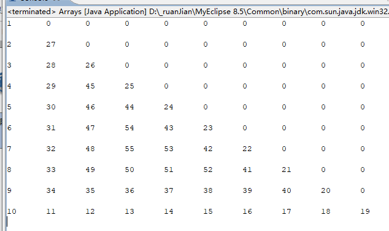
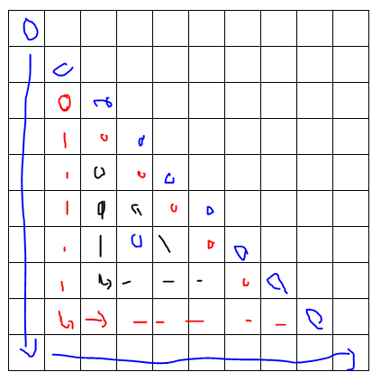

原文出处:本文由博客园博主细莎没漠提供。
原文连接:https://www.cnblogs.com/debjJava/p/11960743.html
原文连接:https://www.cnblogs.com/debjJava/p/11960743.html
一、效果图

二、具体效果实现代码


1 public static void main(String[] args) {
2 int[][] array = new int[10][10];
3 int num = 1;
4 for(int i=0;i<array.length;i++){
5
6 int j = i%3+i/3; // 固定的 0/1/2 加上对应的圈数
7
8 // 大循环：加二行，加一列
9 while(i%3==0 && j<array.length-i+i%3+i/3){
10 array[j++ + i/3][i/3] = num++;
11 // 行号为圈数 *2
12 // 列号为圈数
13 }
14
15 // 大循环：减一行，加一列
16 while(i%3==1 && j<array.length-i+i%3+i/3){
17 array[array.length-1-i/3][j++] = num++;
18 }
19
20 // 大循环：减一行，减二列
21 while(i%3==2 && j<array.length-i+i%3+i/3){
22 array[array.length-j][array.length-i/3-j++] = num++;
23 }
24 }
25 for(int i=0;i<array.length;i++){
26 for(int j=0;j<array.length;j++){
27 System.out.print(array[i][j]+"\t");
28 }
29 System.out.println("\n");
30 }
31 }三、核心思想
四、解题思想剖析
1、根据题目要求作图，便于解题与整理思路。
2、寻找可寻规则，并与相关变量相联系
3、从大框架入手，先保证外部大循环可实现
4、通过不断的调式与修改，优化出最好代码
5、养成添加注释习惯，更加便利自己理解与进一步的分析